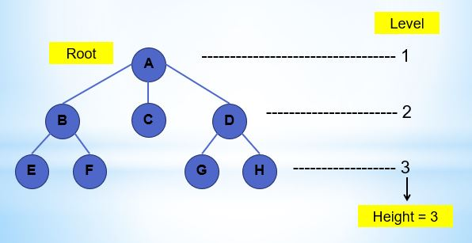
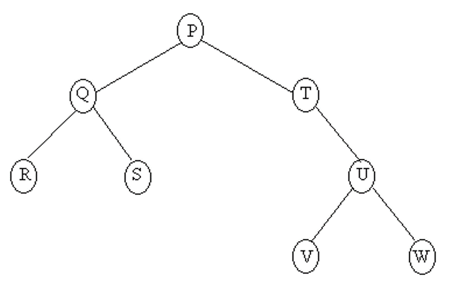

Welcome To My Blog
Sebuah Blog yang ditulis oleh saya sendiri

Tree
STRUKTUR POHON & KUNJUNGAN POHON BINER
DEFINISI POHON (TREE)
Pohon (Tree) termasuk struktur non linear yang didefinisikan sebagai data yang terorganisir dari suatu item informasi cabang yang saling terkait

Istilah – istilah Dalam Pohon
1. Predesesor Node yang berada diatas node tertentu. (contoh : B predesesor dari E dan F)
2. Succesor Node yang berada dibawah node tertentu. (contoh : E dan F merupakan succesor dari B)
3. Ancestor Seluruh node yang terletak sebelum node tertentu dan terletak pada jalur yang sama. (contoh : A dan B merupakan ancestor dari F)
4. Descendant Seluruh node yang terletak sesudah node tertentu dan terletak pada jalur yang sama. (contoh : F dan B merupakan ancestor dari A)
5. Parent Predesesor satu level diatas satu node (contoh : B merupakan parent dari F)
6. Child Succesor satu level dibawah satu node (contoh : F merupakan child dari B)
7. Sibling Node yang memiliki parent yang sama dengan satu node (contoh : E dan F adalah sibling)
11. Root (Akar) Node khusus dalam tree yang tidak memiliki predesesor (Contoh : A)
12. Leaf (Daun) Node-node dalam tree yang tidak memiliki daun (contoh : Node E,F,C,G,H)
13. Degree (Derajat) Banyaknya child yang dimiliki oleh suatu node (contoh : Node A memiliki derajat 3, node B memiliki derajat 2)
ISTILAH-ISTILAH DASAR
Pohon atau Tree adalah salah satu bentuk Graph terhubung yang tidak mengandung sirkuit. vt vtKarena merupakan Graph terhubung, maka pada Pohon (Tree) selalu terdapat Path atau Jalur yang menghubungkan setiap simpul dalam dua pohon.vt vt Pohon (Tree) dapat juga didefinisikan sebagai kumpulan elemen yang salah satu elemennya disebut dengan Akar (Root) dan sisa elemen lain (Simpul) yang terpecah menjadi sejumlah himpunan yang saling tidak berhubungan yang disebut dengan Subpohon (Subtree) atau cabang
Diketahui suatu bentuk Pohon Berakar T sebagai berikut : 
Pohon Diatas Mempunyai : a. Simpul sebanyak = 8 dan edge = n - 1 = 8 – 1 = 7vrb. Root pada Pohon T diatas adalah Simpul Pvtc. Mempunyai daun (Leaf) = 4, yaitu = R, S, V dan W
d. Level (tingkatan) Pohon = 4 yaitu :vt Level 1 = Simpul Pvt Level 2 = Simpul Q dan Tvt Level 3 = Simpul R, S dan Uvt Level 4 = Simpul V dan Wvte. Ketinggian atau kedalaman = jumlah level = 4vtf. Weight atau berat atau bobot = jumlah daun = 4vt vtDalam gambar Pohon T diatas dapat dibentuk 2 buah hutan (forest), bila simpul P dihilangkan, yaitu : vt Hutan 1 : Q,R,S vt Hutan 2 : T,U,V,W
Karakteristik Pohon Binar (Binary Tree) :vt 1. Setiap Simpul paling banyak hanya memiliki dua buah anak vt2.
Derajat Tertinggi dari setiap Simpul adalah dua.vt3.
Dibedakan antara Cabang Kiri dan Cabang Kanan.vt4.
Dimungkinkan tidak mempunyai Simpul vt vtBerikut ini diberikan contoh gambar Pohon Binar (Binary Tree) dengan Cabang Kiri dan Cabang Kanan.
ISTILAH PADA POHON BINER
Pohon Biner Penuh
(Full Binary Tree) Semua simpul (kecuali daun) memiliki 2 anak dan tiap cabang memiliki panjang ruas yang sama
Pohon Biner Lengkap
(Complete Binary Tree) Hampir sama dengan Pohon Biner Penuh, semua simpul (kecuali daun) memiliki 2 anak tetapi tiap cabang memiliki panjang ruas berbeda
Pohon Biner Similer
Dua pohon yang memiliki struktur yang sama tetapi informasinya berbeda
Pohon Biner Ekivalent
Dua pohon yang memiliki struktur dan informasi yang sama
Pohon Biner Miring (Skewed Tree)
Dua pohon yang semua simpulnya mempunyai satu anak / turunan kecuali daun
Penyajian Pohon Binar (Binary Tree)
Tree dapat dibuat dengan menggunakan linked list secara rekursif.
Linked list yang digunakan adalah double linked list non circular
Data yang pertama kali masuk akan menjadi node root.
Data yang lebih kecil dari data node root akan masuk dan menempati node kiri dari node root,
sedangkan jika lebih besar dari data node root, akan masuk dan menempati node di sebelah kanan node root.
Bila diberikan untai HAKJCBL, maka proses untuk dapat membentuk pohon biner dari untai diatas adalah : 1. Karakter pertama ‘H’ ditempatkan sebagai akar (root) 2. Karakter ‘A’,karena lebih kecil dari ‘H’, maka akan menempati cabang kiri. 3. Karakter ‘K’, karena lebih besar dari ‘H’, maka akan menempati cabang kanan. 4. Karakter ‘J’, lebih besar dari ‘H’ dan kecil dari ‘K’, maka menempati cabang kiri ‘K’. 5. Karakter ‘C’,karena lebih besar dari ‘A’, maka akan menempati cabang kanan. 6. Karakter ‘B’, karena lebih kecil dari ‘C’, maka akan menempati cabang kiri. 7. Karakter ‘L’, lebih besar dari ‘K’, maka menempati cabang kiri kanan.
Kunjungan Pada Pohon Biner
Kunjungan pada pohon biner merujuk pada proses mengunjungi setiap simpul atau elemen dalam pohon biner. Pohon biner adalah struktur data yang terdiri dari simpul-simpul yang terhubung dengan menggunakan tepi-tepi. Setiap simpul dalam pohon biner memiliki maksimal dua anak, yaitu anak kiri dan anak kanan. Kunjungan pada pohon biner dapat dilakukan dengan tiga metode yang umum digunakan:
Preorder: Pada metode ini, kunjungan dimulai dari simpul akar, kemudian dilanjutkan ke anak kiri, dan terakhir ke anak kanan.
Inorder: Pada metode ini, kunjungan dimulai dari anak kiri, kemudian ke simpul akar, dan terakhir ke anak kanan.
Postorder: Pada metode ini, kunjungan dimulai dari anak kiri, kemudian ke anak kanan, dan terakhir ke simpul akar.
Kunjungan pada pohon biner berguna dalam berbagai aplikasi, seperti pencarian, pengurutan, dan manipulasi data dalam struktur pohon biner. Metode kunjungan yang digunakan tergantung pada kebutuhan spesifik dari aplikasi yang sedang digunakan.
Penulis Muhamad Dzikrulloh

Struktur data adalah pengaturan data di dalam memori komputer. dengan cara menyimpan, mengambil, dan menyusun data. Struktur data memungkinkan data yang ada di komputer lebih mudah diakses dan diperbarui.
Read More..
Adalah tipe data yang hanya bernilai benar (true) atau salah (false). Jangkauan (nilai yang mungkin) hanya 2 yaitu true atau false. ADT (Abstract Data Type) atau Tipe Data Bentukan
Read More..
• Array dapat didefinisikan sebagai suatu himpunan hingga elemen yang terurut dan homogen. Terurut : Dapat diartikan bahwa elemen tersebut dapat diidentifikasi sebagai elemen pertama, elemen kedua dan seterusnya sampai elemen ke-n.
Read More..
• Penyimpanan dan pengambilan data yang sangat efektif apabila data yang terakhir masuk adalah data yang akan diambil pertama kali. • Tumpukan memungkinkan akses ke satu item data saja, yaitu item terakhir yang disisipkan.
Read More..
1. Queue (antrian) adalah struktur data dimana proses pengambilan dan penambahan element dilakukan pada ujung yang berbeda. 2. Queue mengikuti konsep FIFO.
Read More..